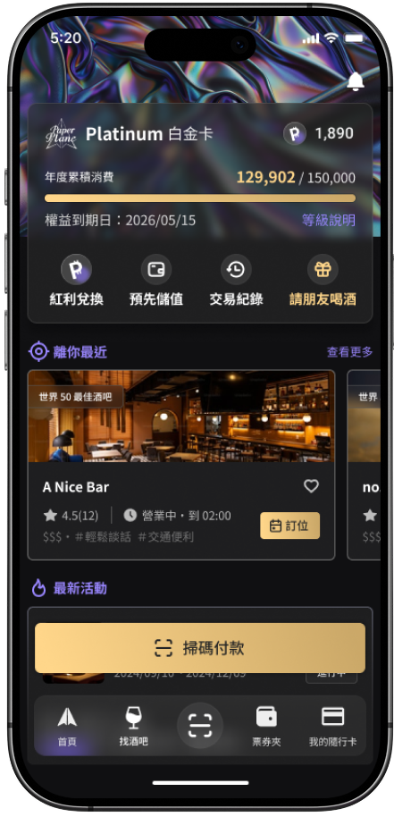
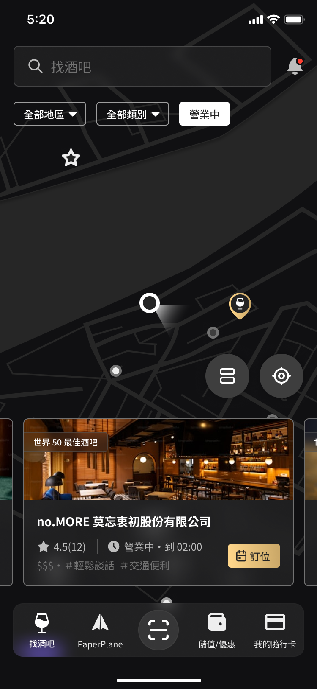
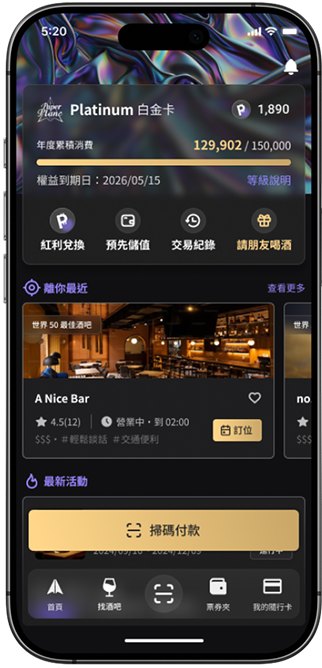

品牌重新定位的產品改版
PaperPlane App
Intro
PaperPlane 酒吧指南／隨行卡
PaperPlane 創立初期為一個 NFT 賦能項目，後期轉型為偏向 Web2 的支付 app，當用戶使用 PaperPlane App 於全台 150+ 合作店家完成付款後，即可取得最高 12% 的紅利回饋，用以折抵下次消費。
初期先以設計外包兼顧問的角色，協助規劃機制、流程還有設計產出，同時針對營運面上的問題以不定期會議形式給予創始團隊建議。
後於 2025 年四月正式以營運長兼產品設計師的角色加入團隊，負責整體產品的設計規劃與開發規格、時程控管，以及部分的營運決策。同時與外包 UI 團隊定義整體產品視覺基調與 Guideline。
PaperPlane App V1.0 版於 2025 年一月正式上線。

Problem & Research
社群聲量水漲船高，App 留存卻不如預期
隨著大量合作活動以及新店家的簽約，加上每年都會舉辦的頒獎典禮，PaperPlane 的品牌聲量日益增加。但這些社群上的聲量與粉絲數，卻無法實際轉換為使用者，且實際使用的留存數據並不如預期。
為了找出原因，我們進行了 8 場用戶訪談、回收近百份問卷調查，並且前往合作酒吧實際觀察使用者的操作行為、現場人員如何推廣，以及實際的結帳流程，在 V2.0 的版本更新中做出了兩個最主要的設計決策。
8 場
用戶訪談
近百份
問卷調查
現場觀察
結帳流程
推廣人員
回饋收集
Insight
對於用戶而言，PaperPlane 到底是什麼？
初期 PaperPlane 的品牌定位仍在對標米其林的「酒吧指南」，以推薦熱門、特色酒吧為主，因此首頁即為地圖式的合作店家點位。
在訪談與調查後，我們發現用戶在構思前往消費前，即會透過如 Google Maps 或 Instagram 等軟體決定消費地點。因此開啟 app 時的主要操作就是「付款」，與一般支付軟體更加接近。
但實際付款時，因飲酒易導致消費者出現預期外的操作行為，因此需要更強烈、簡易的引導及流程。
重新定義功能權重
將首頁佈局與線上支付 app 對齊，將常用功能（支付、儲值、點數兌換、熱門推薦、活動等）根據使用者的需求權重進行策展。
微醺操作引導
因應喝酒後意識模糊，以跳色的大型「付款」常駐於畫面下方，使用戶即便微醺也能順利完成結帳。
V 1.0 首頁（以地圖為主）

V 2.0 首頁（以支付為主）

付款流程簡化
對於用戶而言
使用 PaperPlane 最大的阻礙是什麼？
V1.0 沿用過往 web/LINE@ 時期的付款流程，用戶需要先儲值，後付款。但實際觀察推廣現場時發現，即便提供額外儲值優惠（首儲 1,000 送 200），對用戶而言儲值門檻依然過高，操作流程也過於繁瑣。
因此在 V2.0 的支付系統中，我們加入了「自動儲值」功能，在用戶付款當下，計算該次付款所需儲值的金額（扣除可用紅利與折扣等），同時完成「儲值」與「付款」，用戶無需預先操作儲值，讓操作流程更加簡便，也降低進入門檻，使活躍用戶數更進一步提升。
V 1.0 付款流程
V 2.0 付款流程
自動儲值
Result
關鍵數字
61%
V2.0 上線後六個月
總註冊用戶成長％
15%
V2.0 上線後六個月
付費用戶成長％
5場
V2.0 上線後六個月
異業合作活動
學習與反思
提高角色定位
以研究為本，事先規劃長期戰略
V1.0 版本在外包與時程、資源的限制下，沒有足夠空間進行實際研究，以及對於未來戰略的討論，直到上線後才透過後續研究發現產品定位的根本性問題。
實際在酒吧觀察用戶以及現場服務人員結帳的互動是整個改版中最引人入勝的地方，看著一方試圖解釋你的產品，而另一方也實際在操作畫面試圖完成任務，那種感受是任何訪談與問卷都難以取代的設計感知。
若能再次規劃產品，我會更早建立可複用的活動後台模板，避免一次性功能累積成技術債，並儘早進行使用者驗證、確實控管規格文件，讓未來的改版與發展都能更加順利。